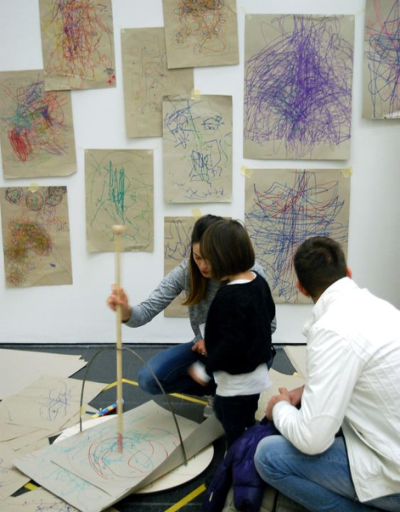

Info Utili
Laboratorio bambini Il laboratorio creativo per bambini è un'avventura artistica pensata per stimolare l'immaginazione e la creatività dei più piccoli. Attraverso attività manuali, disegno e pittura, i bambini avranno l'opportunità di esplorare diverse tecniche artistiche in un ambiente divertente e accogliente. Guidati da istruttori esperti, impareranno a esprimere le proprie idee e emozioni creando opere d'arte uniche. Questo workshop è progettato non solo per sviluppare le abilità artistiche, ma anche per incoraggiare il lavoro di squadra, la fiducia in sé e l'apprezzamento per l'arte. Un'esperienza educativa e coinvolgente, perfetta per liberare la fantasia e il talento di ogni bambino.
